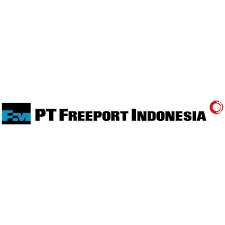

Klien Kami


PT. Central Cintra Nusantara telah dipercaya oleh PT. Freeport Indonesia sejak tahun 2011 untuk menangani layanan PM Check, perawatan unit Hino & Isuzu, Refurbishment kendaraan IVECO, perbaikan sistem seatbelt & body kendaraan tambang, serta proyek Rebuilt Injector.